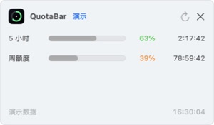

macOS 14+ · Apple 芯片
Codex 用量，
常驻菜单栏。
免费开源的 macOS 菜单栏 Codex 用量监控工具。用菜单栏或悬浮 HUD 查看 5 小时与周额度、重置倒计时，并可在额度偏低或重置时提醒。


菜单栏与悬浮 HUD
左键详细面板、右键快捷菜单，⌥⌘Q 快速显示 HUD。
左键详细面板、右键快捷菜单，⌥⌘Q 快速显示 HUD。
额度与重置提醒
同时展示额度窗口、重置倒计时和可选系统通知。
同时展示额度窗口、重置倒计时和可选系统通知。
本地优先
使用官方 Codex 登录流程，没有开发者后端、广告或分析 SDK。
使用官方 Codex 登录流程，没有开发者后端、广告或分析 SDK。
Codex usage at a glance
QuotaBar is a native SwiftUI Codex usage tracker for the macOS menu bar. Version 1.1 adds a compact floating HUD, a native right-click menu, the ⌥⌘Q global shortcut, and optional low-quota/reset notifications.
It is free, open source, local-first, and does not require an OpenAI API key. The current release supports Apple Silicon Macs running macOS 14 or later.
安装
- 从 GitHub Releases 下载
QuotaBar-v1.1.0-macOS-arm64.zip。 - 解压后把 QuotaBar 拖入“应用程序”文件夹。
- 首次启动时按住 Control 点击 App，选择“打开”，再确认“打开”。
当前发布包采用临时签名且未经过 Apple 公证，因此首次打开需要额外确认。
开始使用
- 启动 QuotaBar，并通过 Codex 官方流程登录 ChatGPT。
- 左键菜单栏图标打开详细面板，右键打开快捷菜单。
- 在右键菜单或设置中开启悬浮 HUD，也可以按 ⌥⌘Q 快速切换。
- 需要额度提醒时，在设置中主动启用系统通知。
自愿赞助
QuotaBar 的所有功能永久免费。赞助金额由你决定，不会解锁或限制任何功能。


反馈
Bug、功能建议和使用问题统一提交到 GitHub Issues。请勿上传密码、Cookie 或登录令牌。